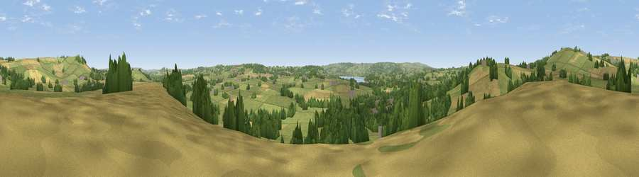

Viewpoint near Chew Magna
#26490 in England · top 49% of its area beats it · near Chew MagnaThe view, rendered

A 360° render of this exact spot computed from the terrain model, tree cover and land cover — summer colours, afternoon light, calibrated against photographs of famous viewpoints. Real trees, hedges and buildings will differ in detail.
The panorama
Grey silhouette: terrain skyline in each direction (720 bearings, Earth curvature and refraction included). Dashed green: skyline with trees (+15 m) and buildings (+8 m) as obstacles. Blue strip: how far the ground is visible on each bearing.
Where the view opens
Wedge length = distance to the farthest visible ground on that bearing (vegetation-aware). Rings at 10, 25 and 50 km.
What fills the view
58% grassland · 21% cropland · 18% woodland · 2% built-up ·
Angular shares of the visible panorama (visual magnitude), not map area. Landscape diversity 0.46 (0–1 Shannon).
Key numbers
More beautiful places nearby
The staircase of upgrades: each row has a higher view potential than everything closer. Driving times are estimates from straight-line distance, calibrated against real road routing — check an actual route before setting out.
| Place | Direction | Drive | Score |
|---|---|---|---|
| Viewpoint near Chew Magna | W · 1 km | ~3 min | 50.4 |
| Viewpoint near Norton Malreward | NE · 3 km | ~7 min | 68.9 |
| New Down | NNW · 3 km | ~7 min | 70.6 |
| Viewpoint near Norton Malreward | NNE · 3 km | ~7 min | 72.9 |
| Viewpoint near Charterhouse | SW · 11 km | ~21 min | 74.0 |
| Beacon Batch | SW · 12 km | ~22 min | 79.4 |
| Bleadon Hill [Loxton Hill] | WSW · 23 km | ~37 min | 79.6 |
| Viewpoint near Stinchcombe | NNE · 37 km | ~56 min | 80.5 |
51.37328, -2.60154 · source: screening · position refined by local search. Computed location — check access rights before visiting.